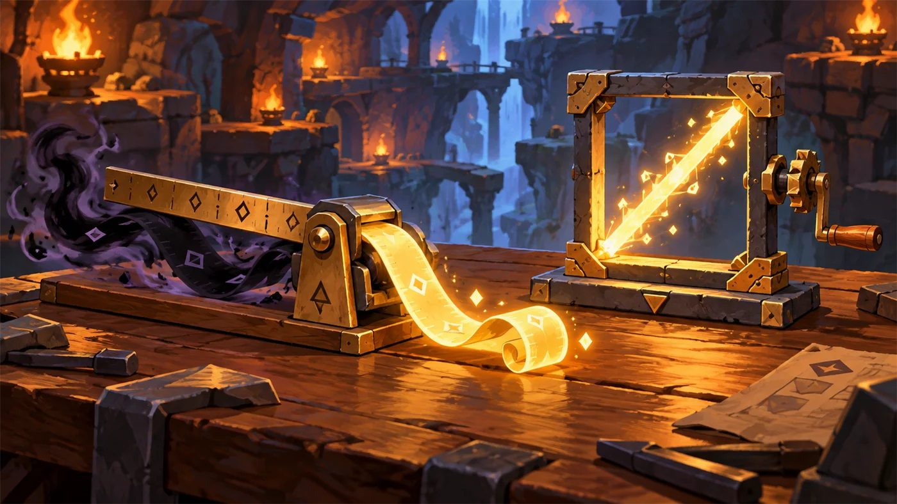
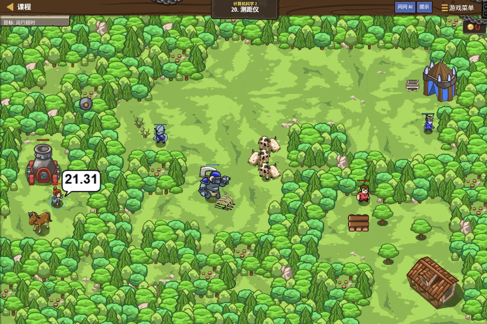

故事：溪谷边缘架着一门大炮。你还没反应过来，
指挥员递给你一副古怪的眼镜：戴上它，你能看见敌人离你多远。
可大炮看不见——它的视线被树挡住了。
所以你要做的，是把距离"说"给它听。
扣哒考级 · GESP PYTHON 二级 · 第 6 单元 | 回声溪谷 ECHOSTREAM VALLEY
溪谷量尺 常用数学函数
Common Math Functions

安雅
红发队长 · 你的旅伴
溪谷中段的哨站里有一间小屋，屋梁上挂着一排形状古怪的工具：
一柄能把弯的折直的尺、一面能筛出最大最小的网、一块能把棱角磨圆的石头……
你正看得发愣，管理员抬头说：这些叫量具。
写程序也是同样的道理——有些活儿不用自己动手算，工具箱里早就有现成的了。 今天你要学会的，就是怎么把它们拿出来用。
你正看得发愣，管理员抬头说：这些叫量具。
写程序也是同样的道理——有些活儿不用自己动手算，工具箱里早就有现成的了。 今天你要学会的，就是怎么把它们拿出来用。
安雅 · 红发队长
二级考纲里有"数学函数"这一条，说的就是这些现成工具。其中
abs、max、min、round
是一级就见过的老熟人——这一单元我们要把它们用得更熟练；
顺便再学一个新东西：怎么从"工具箱"里搬工具（模块）。
assets/illustrations/py-L2-06-01_measuring_rulers.webp
【配图位】溪谷小屋里的两件魔法量具：一柄能把"弯曲的负长度"自动折成直线的尺子；一个方形木框，摇动侧面的手柄就能把它的对角线长度抽出来。暖色灯下摆在工作台上。
0 单元导语与目标
Unit Overview
1学完这个单元，你将能……
- 用
abs()求绝对值，说出它和"去掉负号"的关系 - 用
max()/min()从多个数里挑最大最小 - 分清
round()和int()在处理小数时的区别 - 用
round(x, n)保留 n 位小数 - 用
pow(a, b)求乘方 - 会用
import导入模块并调用其中的函数
2对标 GESP 考纲（Python 二级）
- （10）掌握数学函数、字符串函数的使用
- （11）掌握模块的导入方法
- （8）了解数字类型、字符串类型和布尔类型的初级使用
- 考核目标：能选用合适的数学函数解决计算问题
1 abs：把负数折正
abs — Absolute Value
小屋里的那柄尺子很神奇：你递给它 -7，它量出来是 7；递给它 7，量出来还是 7。 它从不关心方向，只关心"离零有多远"。
这就是绝对值——数学里写作 |x|，Python 里写成 abs(x)。
abs 的用法
Python
print(abs(-7))
print(abs(7))
print(abs(0))
print(abs(-3.5))
# 常见用途：算"两个数的差距"，不管谁大谁小
a = 3
b = 10
print(abs(a - b))
print(abs(b - a))OUTPUT 7
7
0
3.5
7
7
7
0
3.5
7
7
abs 的作用：
把负数变成正数，正数保持不变。（更准确地说：得到这个数到 0 的距离。）
最后两行很关键——求"两个数差多少"时，用 abs 就不用操心谁减谁。
最后两行很关键——求"两个数差多少"时，用 abs 就不用操心谁减谁。

欧卡 · 撼地者
我扛货的时候从不关心"往东走还是往西走"，我只问一句：要走多远？"往东 30 步"和"往西 30 步"，在我这儿都是"30 步"。
这就是绝对值——方向归方向，距离归距离。
2 max 与 min：挑最大最小
max & min
小屋的墙上挂着一张筛网：把一把数字倒进去，它能替你挑出最大的那个（或最小的那个）。
图 2（SVG）：max 挑最大、min 挑最小
max 与 min 的几种用法
Python
print(max(3, 17, 9, 25, 6)) # 多个数里挑最大
print(min(3, 17, 9, 25, 6)) # 多个数里挑最小
print(max(10, 20)) # 两个数也行
print(min(10, 20))
# 也可以把变量放进去
a = 88
b = 95
c = 76
print(max(a, b, c))
print(min(a, b, c))OUTPUT 25
3
20
10
95
76
3
20
10
95
76
实战里怎么用？
比如"英雄的血量不能超过上限"就可以写成
hp = min(hp, MAX_HP)——
不管加了多离谱的血，一律压回上限以内。
这种写法在游戏里到处都是。
3 round：把小数的角磨圆
round — Rounding
3.1 round 与 int 的区别
小屋的角落里放着两块石头：一块是磨石（把 3.9 磨成 4），
一块是砍刀（把 3.9 直接削成 3）。它们分别对应 round() 和 int()。
图 3（SVG）：round 会四舍五入，int 直接截断
| 原数 | round() | int() | 说明 |
|---|---|---|---|
| 3.4 | 3 | 3 | 小数部分小于 0.5，两者一样 |
| 3.9 | 4 | 3 | 最容易考的一组对比 |
| 3.5 | 4 | 3 | round 进位，int 仍截断 |
| -3.9 | -4 | -3 | 负数也一样：round 看"离谁近" |
别混用：
要做"四舍五入"就用
round()；
int() 的功能是"转成整数类型"，它顺手把小数砍了，
但它的本职不是四舍五入。这两者混用是二级最常见的失分点之一。
3.2 保留指定小数位
round() 还能带第二个参数，表示"保留几位小数"：
保留小数位
Python
pi = 3.14159
print(round(pi)) # 不写第二个参数：取整
print(round(pi, 2)) # 保留两位小数
print(round(pi, 3)) # 保留三位
print(round(2.5)) # 2.5 进到偶数 2
print(round(3.5)) # 3.5 进到偶数 4OUTPUT 3
3.14
3.142
2
4
3.14
3.142
2
4
最后两行有点怪？
考试里很少考这个细节，但你要知道有这么回事，别到时候以为程序算错了。
round(2.5) 得到 2 而不是 3——
这是因为 Python 用的是"四舍六入五取偶"规则：刚好在正中间时，结果取更接近的偶数。考试里很少考这个细节，但你要知道有这么回事，别到时候以为程序算错了。
4 pow 与乘方
pow & Power
求乘方你一级就学过 **，Python 还额外提供了一个函数 pow()：
| 写法 | 含义 | 例子 | 结果 |
|---|---|---|---|
a ** b | 运算符写法 | 2 ** 10 | 1024 |
pow(a, b) | 函数写法 | pow(2, 10) | 1024 |
两种写法完全等价，用哪个都行。
平时更常用
**，因为它更短；
当代码里变量很多时，pow(a, b) 会更清楚一些。
5 模块的导入与使用
Importing Modules
前面这些函数（abs、max、min、round、pow）
是 Python 自带的，打开就能用。
但还有很多工具装在"工具箱"里——工具箱本身不会自动打开，你得先说一声"我要用"。
这句话就是 import。
图 4（SVG）：模块导入的两步——先 import，再用"模块名.函数名"调用
两种导入方式
Python
# 方式一：整体导入，用的时候要写模块名
import math
print(math.sqrt(16)) # 16 的平方根
print(math.pi) # 圆周率
# 方式二：只导入需要的函数，用的时候不用写模块名
from math import sqrt
print(sqrt(25))OUTPUT 4.0
3.141592653589793
5.0
3.141592653589793
5.0
两种写法对比：
写在程序最前面，这是惯例（也是规范）。
import math → 调用时写 math.sqrt(16)，讲究"是哪家的工具"；from math import sqrt → 调用时直接写 sqrt(16)，更短，但要小心重名。写在程序最前面，这是惯例（也是规范）。
6 代码实战
Level Practice
关卡
测距仪
进入关卡 →

assets/stages/py-L2-06-stage1_rangefinder.webp
【关卡截图位】请把《测距仪》的游戏画面截图放到此处（放入 assets/stages/ 目录，文件名为 py-L2-06-stage1_rangefinder.webp）。
思路：看上面的关卡实况——大炮的视线被树挡住了，只能靠你报点。
用 hero.distanceTo(目标) 量出距离，
再用 hero.say() 把结果喊出来，大炮就会顺着这个距离开火。
但千万小心：森林里还住着爱好和平的人——别把友方给点了。
重点示例：量距离 → 存变量 → 喊出来
Python
enemy1 = "Gort"
distance1 = hero.distanceTo(enemy1) # 量出与它的距离
hero.say(distance1) # 把距离告诉大炮要点 剩下三个目标照这个套路各写一遍；友方
Charles 那一组要跳过不报
这一关把前面学的东西全用上了：
① 字符串：
② 变量：
③ 函数：
④ 注释：友方那一行前面加
① 字符串：
"Gort" 是目标的名字；② 变量：
distance1 把量到的结果记住；③ 函数：
hero.distanceTo() 就是"量距离"这件工具；④ 注释：友方那一行前面加
#，让它不执行——
"把一行代码注释掉"是实战里最常用的手法。
想一想：这里为什么要给四个目标分别用
因为它们要同时记住四个距离。如果全用同一个名字，后面量到的会把前面的覆盖掉—— 这又回到了第 2 单元"会记事的木箱"。
去扣哒世界闯这一关 →
distance1、distance2……
四个不同的变量名？因为它们要同时记住四个距离。如果全用同一个名字，后面量到的会把前面的覆盖掉—— 这又回到了第 2 单元"会记事的木箱"。
7 常见陷阱
Common Pitfalls

扣哒鸭 · 调试官
数学函数这一章，错误就集中在"abs 和 int 分不清""round 和 int 混用"上。
四条，背下来考试直接捡分。
1
以为
int() 会四舍五入。写 int(3.9) 想要 4。
扣哒鸭：
想四舍五入却写了 int——这题我见过一百遍。
int() 是砍，round() 才是磨。
int(3.9) 得 3，round(3.9) 才是 4。想四舍五入却写了 int——这题我见过一百遍。
正确写法：要四舍五入用
round(3.9)2
忘了写
import 就直接用 math 里的东西。
扣哒鸭：报错是
工具箱没搬过来就想拿工具——老老实实在第一行写
NameError: name 'math' is not defined。工具箱没搬过来就想拿工具——老老实实在第一行写
import math。正确写法：程序开头写
import math，再写 math.sqrt(16)3
用了
import math 却直接写 sqrt(16)。
扣哒鸭：
想省掉
import math 是"搬来整个箱子"，用的时候得说清
"用哪个箱子里的"：math.sqrt(16)。想省掉
math.，就得写 from math import sqrt。正确写法：
import math + math.sqrt(16)，或 from math import sqrt4
把
abs 当成"取反"或"变成负数"。
扣哒鸭：
abs(-7) 得 7，不是 -7。
abs 的结果永远是非负数——它的意思是"离 0 多远"，距离怎么会是负的？正确理解：
abs(-7) → 7；abs(7) → 78 题目练习
Practice
第 1 题改编自 2026 年 9 月 · Python 二级 第 14 题，其余为原创练习题。
改编自 2026 年 9 月 · Python 二级 · 第 14 题单选题
小北的身高是 1.65 米。班上有 n 个小朋友，小北想和身高最接近自己的人交朋友。如果有多个小朋友与他的身高差相同，小北想和其中身高较矮的那一位做朋友。
横线处应该填入的代码是（ ）。
横线处应该填入的代码是（ ）。
1 n = int(input("请输入小朋友的人数: "))
2 target = 1.65
3 best_height = 0.0
4 min_diff = 100.0 # 假设身高差不会超过 100
5
6 for i in range(n):
7 h = float(input(f"请输入第 {i + 1} 个小朋友的身高: "))
8 diff = abs(h - target)
9
10 if ____________________: # 横线处填空
11 min_diff = diff
12 best_height = h
13
14 print("小北的朋友身高为:", best_height)A.diff < min_diff or (diff == min_diff and h < best_height)
B.diff <= min_diff and h < best_height
C.diff < min_diff and h < best_height
D.diff < min_diff or h < best_height
B.diff <= min_diff and h < best_height
C.diff < min_diff and h < best_height
D.diff < min_diff or h < best_height
查看答案与详解
答案：A。
先看主条件：身高差更小就更新（
再看并列：差的绝对值相同则取较矮的那个（
两段之间用
B 错：用
C 错：没有处理"差相同"的并列情况；
D 错：直接用
思路模板：求最值类题目都长这样——先比目标值，再处理并列，最后更新答案。
对应小节2 绝对值。
abs(h - target) 就是本单元学的绝对值函数——它把"谁高谁矮"统一成"差多少"，不用再分两种情况。先看主条件：身高差更小就更新（
diff < min_diff）；再看并列：差的绝对值相同则取较矮的那个（
diff == min_diff and h < best_height）；两段之间用
or 连接，所以选 A。B 错：用
and 把两个条件捆在一起，差更小时如果身高不更矮就不更新，会漏掉最佳选择；C 错：没有处理"差相同"的并列情况；
D 错：直接用
or 连两个独立条件，只要身高更矮就更新，可能把"差更大但更矮"的人也选中。思路模板：求最值类题目都长这样——先比目标值，再处理并列，最后更新答案。
对应小节2 绝对值。
原创练习题单选题
下列 Python 代码执行后，输出的结果是（ ）。
1 print(abs(-8), round(3.6), int(3.6))
A.-8 3 3 B.8 4 3 C.8 3 4 D.8 4 4
查看答案与详解
答案：B。
这道题一次考了三个函数，是二级最典型的"组合小题"。
对应小节1 abs；3.1 round 与 int 的区别。
abs(-8) = 8（绝对值）；round(3.6) = 4（四舍五入）；int(3.6) = 3（直接截断）。这道题一次考了三个函数，是二级最典型的"组合小题"。
对应小节1 abs；3.1 round 与 int 的区别。
原创练习题单选题
下列 Python 代码执行后，输出的结果是（ ）。
1 print(max(12, 5, 28, 7), min(12, 5, 28, 7))
A.28 5 B.5 28 C.12 7 D.7 12
查看答案与详解
答案：A。
易错点：注意两个函数的顺序——先 max 后 min，别把答案顺序写反。
对应小节2 max 与 min。
max() 从括号里挑出最大的 28，
min() 挑出最小的 5。易错点：注意两个函数的顺序——先 max 后 min，别把答案顺序写反。
对应小节2 max 与 min。
原创练习题单选题
下列 Python 代码执行后，输出的结果是（ ）。
1 pi = 3.14159 2 print(round(pi, 2))
A.3 B.3.1 C.3.14 D.3.142
查看答案与详解
答案：C。
不写第二个参数时才是取整（得 3）；写 3 则得 3.142。
对应小节3.2 保留指定小数位。
round(pi, 2) 中的 2
表示"保留两位小数"，所以得到 3.14。不写第二个参数时才是取整（得 3）；写 3 则得 3.142。
对应小节3.2 保留指定小数位。
原创练习题判断题
在 Python 中，
int(9.99) 的结果是 10。（ ）查看答案与详解
答案：错误（×）。
想要 10 必须用
对应小节3.1 round 与 int 的区别。
int() 直接砍掉小数部分，
所以 int(9.99) 的结果是 9。想要 10 必须用
round(9.99)。对应小节3.1 round 与 int 的区别。
原创练习题单选题
要使用 math 模块中的 sqrt 函数，下列写法错误的是（ ）。
A.
B.
C.不写 import，直接写
D.先写
import math 之后写 math.sqrt(16)B.
from math import sqrt 之后写 sqrt(16)C.不写 import，直接写
sqrt(16)D.先写
from math import sqrt，再写 print(sqrt(16))
查看答案与详解
答案：C。使用模块里的函数必须先导入。
不写
对应小节5 模块的导入与使用。
import 就直接用 sqrt，
程序会报 NameError（名字未定义）。对应小节5 模块的导入与使用。
原创练习题单选题
下列 Python 代码执行后，输出的结果是（ ）。
1 a = 3 2 b = 10 3 print(abs(a - b))
A.-7 B.7 C.13 D.3
查看答案与详解
答案：B。先算
用途：求"两个数的差距"时，用
对应小节1 abs。
a - b = 3 - 10 = -7，
再取绝对值得到 7。用途：求"两个数的差距"时，用
abs() 就不用管谁大谁小——
abs(a - b) 和 abs(b - a) 结果一样。对应小节1 abs。
原创练习题编程题
题目要求：输入三个整数，输出它们的最大值、最小值，以及三者的平均值（保留两位小数）。
查看参考答案与要点
a = int(input("请输入第 1 个数："))
b = int(input("请输入第 2 个数："))
c = int(input("请输入第 3 个数："))
print("最大值：", max(a, b, c))
print("最小值：", min(a, b, c))
# 平均值 = 总和 ÷ 3，保留两位小数
avg = (a + b + c) / 3
print("平均值：", round(avg, 2))
运行示例：输入 80、95、76 → 最大值 95、最小值 76、平均值 83.67
要点：
① max() / min() 可以直接放三个变量；
② 求平均要用 /（真除）而不是 //，否则会丢掉小数；
③ 保留两位小数用 round(avg, 2)，也可以用
f"{avg:.2f}"。
对应小节2 max 与 min；3.2 保留指定小数位。
9 本单元小结
Unit Summary

贺舒曼 · 镜中先知
二级到这里就收官了。最后这一课我想留给你们一句话：不要什么都自己算。
求绝对值有
abs，挑最大最小有 max / min，
四舍五入有 round，开平方有 math.sqrt——
会挑工具，比会写算法更省力气。
你在溪谷量尺收获了什么
- abs(x)——求绝对值，结果永远是非负数；常用来算"两个数的差距"。
- max() / min()——从若干个值里挑出最大 / 最小，参数个数不限。
- round(x)——四舍五入取整；
round(x, n)保留 n 位小数。 - round 与 int 的区别——round 会进位（3.9→4），int 直接截断（3.9→3）。
- pow(a, b)——等于
a ** b，两种写法等价。 - 模块导入——
import math后用math.sqrt()； 或from math import sqrt后直接用sqrt()。 - 写模块的习惯——
import一律写在程序最前面。
安雅 · 红发队长
从岗哨到溪谷，六个单元，你走完了。你现在会装数据、会算、会收发货、会判断、会重复、会排错，还会挑工具。
这些东西，已经足够你在二级考场上站稳了。
歇一晚吧，明天我们继续往深处走。